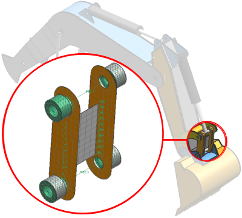

在装配有限元模型文件中，可以使用以下工具定义连接单元，以将组件有限元模型连结到系统中：
使用1D 连接命令来定义 1D 单元的基于几何体或基于 FE 的连接网格。基于几何体的连接网格是基于方法的，在修改几何体或装配或在对组件有限元模型重新划分网格时将自动更新。您还可以使用此命令创建蛛网单元或对连接结构(如销、螺栓或支柱)进行建模。
使用螺栓连接在组件有限元模型之间为各种特定于求解器的螺栓连接进行建模。
使用 CFAST/CWELD 连接在组件有限元模型之间创建 NX Nastran CFAST 与 CWELD 类型的连接。
使用手工节点和单元操作创建单个单元，如连接单元、集中质量单元或壳或六面体单元。您可以使用组件有限元模型中现有的节点创建单元，也可以在装配有限元模型中创建新节点。与 1D 连接不同的是，可将创建的单元添加到现有网格。
但是，由于手工创建的单元不是基于方法的，因此，在修改或更新装配有限元模型、组件有限元模型或 CAD 装配时，使用这些工具创建的单元不能正确更新，或可能被删除。
使用装配模型编辑可将组件有限元模型共享重合节点位置处的重复节点合并起来。
在装配有限元模型的仿真文件中，可使用面对面接触和面对面粘合 来约束组件有限元模型的相邻面的行为。
